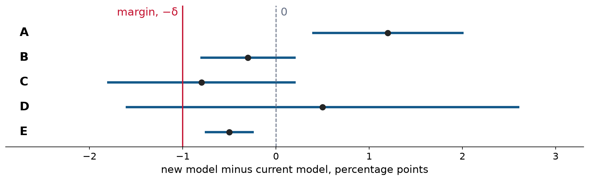

Weeks 1–6, then your questions
The first half reviews what the midterm draws on, one week at a time, with a few short checks along the way.
The second half is yours. Bring a problem from the midterm review packet on Canvas or from a homework Problem 1, and we will work it at the board.
While we review, write down the problems you want to see. I will collect them at the break.
Next class, in class, 75 minutes. It covers Weeks 1–6.
You may bring one sheet of notes you prepared yourself, front and back, and a scientific calculator. No graphing or programmable calculators, AI, books, phones, or other networked devices. The arithmetic is designed to be done by hand, and any square roots you need are printed on the exam.
The exam asks for the same three kinds of work as the homework: reasoning by hand, as in Problem 1; reading printed code and saying what it does statistically; and checking an AI’s answer, as in Problem 3. You will not write code.
Answers are graded on the reasoning, not only the number. Write the setup before the arithmetic, so a slip in arithmetic costs a little and not the whole part.
Logistic regression models the log-odds as linear, \operatorname{logit} p(x) = \beta_0 + \beta_1 x, and is fit by maximum likelihood, which is the same as minimizing cross-entropy.
The rule “predict 1 when \hat p(x) \ge c” is the same as \beta_0 + \beta_1 x \ge \operatorname{logit}(c). Moving the cutoff moves the boundary, not the fitted model. In x alone there is at most one boundary.
A hidden layer adds units h_j(x) = g(w_{j0} + x^T w_j), and the score combines them, so the boundary can bend. With squaring units, as in Week 1A’s circle, the score is a polynomial in x_1 and x_2: expand it, find where it is zero, and shade where it is positive.
A network with inputs x_1 and x_2 has one squaring unit, u(x) = (x_1 - x_2)^2, and score s(x) = 4 - u(x). It predicts 1 when s(x) > 0.
A fitted model is \hat p(x) = \sigma(-1 + 2x), and it predicts 1 when \hat p(x) \ge c.
At a fixed x, for a model fit to a random training set D,
\mathbb E\bigl[(Y-\hat p_D(x))^2 \mid x\bigr] = \underbrace{p(x)\{1-p(x)\}}_{\text{noise}} + \underbrace{\bigl(\mathbb E[\hat p_D(x)] - p(x)\bigr)^2}_{\text{bias}^2} + \underbrace{\operatorname{Var}\{\hat p_D(x)\}}_{\text{variance}}.
A more flexible model usually has lower bias and higher variance. Which one has the smaller error depends on the data, so we compute it rather than assume it.
This is why the course always keeps a simple statistical baseline next to the AI system, and a floor (always predict the most common class) below both. The baseline tells you whether the flexibility bought anything. The floor tells you whether either model learned anything.
A recorded label is one draw from the raters’ response distribution for that item. Two labels, or two models’ scores, can be dependent for two different reasons. The law of total covariance separates them:
\operatorname{Cov}(X, Y) = \underbrace{\mathbb E\bigl[\operatorname{Cov}(X, Y \mid Z)\bigr]}_{\text{after fixing the item}} + \underbrace{\operatorname{Cov}\bigl(\mathbb E[X\mid Z],\, \mathbb E[Y \mid Z]\bigr)}_{\text{because items differ}}.
If the two are independent once the item Z is fixed, the first term is 0. The second term is not 0 when both responses move with the item: an easy item is easy for everyone. That second term is where Week 4’s design effect comes from.
Brier score. If the true probability is q and you report p, the expected score is (p - q)^2 + q(1 - q). Only the first term depends on what you report, so the honest p = q scores best. Averaging m conditionally independent labels shrinks the label variability by 1/m.
The split decides what “new” means. Random rows test more of the same mix, held-out groups test new groups, and later cases test the future.
Anything fitted (the vocabulary, the model) uses training data. Anything chosen (a threshold, a prompt) uses validation data. The test set is used once.
A test set is a sample of items, so an accuracy \hat p = k/n has a standard error, about \sqrt{\hat p(1-\hat p)/n} for independent items.
Wald, \hat p \pm z\sqrt{\hat p(1-\hat p)/n}, fails near 0 and 1: at 19 of 20 it runs past 1, and at 20 of 20 it has zero width. Wilson keeps every p with |\hat p - p| \le z\sqrt{p(1-p)/n}, so its center \dfrac{\hat p + z^2/(2n)}{1 + z^2/n} is pulled toward 1/2, most strongly when n is small.
Zero errors in n independent cases do not mean the error rate is 0. The one-sided 95% upper bound is about 3/n, the rule of three.
What 95% means: the procedure captures the true accuracy in about 95% of repeated samples. It says nothing about problems the sample cannot see, such as leakage, disputed labels, or a different population.
When items share a source (a passage, a prompt, a camera sequence, a task), they tend to be right or wrong together. Let item i in cluster g be right with probability P_g, where P_g varies across clusters with mean p and variance \tau^2. With Z = P_g, the law of total covariance gives, for two items in the same cluster,
\operatorname{Cov}(Y_{gi}, Y_{gk}) = 0 + \operatorname{Var}(P_g) = \tau^2, \qquad \rho = \frac{\tau^2}{p(1-p)}.
With m items per cluster and n items in all,
\operatorname{Var}(\hat p) = \frac{p(1-p)}{n}\bigl[1 + (m-1)\rho\bigr].
The design effect is 1 + (m-1)\rho, and the effective sample size is n divided by it. An interval that ignores clustering is too narrow, so resample whole clusters. The result still describes only the kind of clusters you sampled.
| B right | B wrong | |
|---|---|---|
| A right | n_{11} | n_{10} |
| A wrong | n_{01} | n_{00} |
The difference in accuracy is \widehat\Delta = \hat p_B - \hat p_A = (n_{01} - n_{10})/n. Only the disagreements matter.
McNemar’s test. If the models are equally accurate, each disagreement is a fair coin, so n_{01} \sim \operatorname{Binomial}(m, 1/2) given m = n_{10} + n_{01}. For large m, z = (n_{01} - n_{10})/\sqrt{n_{10} + n_{01}}.
Paired standard error: \operatorname{SE}(\widehat\Delta) \approx \sqrt{n_{10} + n_{01}}/n, smaller than the unpaired one because a question that is hard for one model tends to be hard for the other. If the models answered different questions, there is no pairing: use Fisher’s exact test.

The Week 5 picture: each line runs from the one-sided 95% lower bound \widehat\Delta - 1.645\,\mathrm{SE} to the upper bound. Non-inferior means the left end is above -\delta, with \delta chosen before looking. Which rows support switching to the new model?
A model is calibrated if, among the answers it gives with confidence c, about a fraction c are right. One answer cannot check this. We group answers into bins by confidence, and each bin’s accuracy is k right out of n, so it gets a Wilson interval. A gap is real when the bin’s average confidence is outside its interval.
Accuracy and calibration are different. A model that says 0.5 on every yes-or-no question and is right half the time is calibrated and useless.
\text{ECE} = \sum_b \frac{n_b}{n}\,\bigl|\text{accuracy}_b - \text{confidence}_b\bigr|.
ECE equals average confidence minus accuracy only when every bin’s gap has the same sign. It depends on the bins, drops the direction, and averages over groups, so report the reliability table with its counts next to it.
The tool answers on its own when confidence is at least t. Two numbers describe the rule:
\text{share answered} = \frac{\#\{\text{confidence} \ge t\}}{\#\{\text{all questions}\}}, \qquad \text{error rate} = \frac{\#\{\text{wrong, confidence} \ge t\}}{\#\{\text{confidence} \ge t\}}.
The error rate’s denominator is the questions the tool answered. Compare its interval, not just its estimate, with the client’s limit.
Check. At t = 0.9, a model answers 400 of 1,000 questions on its own. Their average confidence is 0.96, and 32 are wrong. The Wilson interval for the error rate is [5.7%, 11.1%]. The client allows at most 5% wrong.
The tool answers 40% of questions, and 32/400 = 8\% of those answers are wrong, where the model promised about 4%. The whole interval is above 5%, so this rule does not meet the limit.
Name the idea or method each situation calls for.
| Situation | Idea or method | |
|---|---|---|
| 1 | Same 800 questions | Paired table, McNemar’s test, paired interval |
| 2 | Different questions | Fisher’s exact test (no pairing to use) |
| 3 | 50 of 50 right | Rule of three: error rate up to about 3/50 = 6% |
| 4 | 20 questions per document | Design effect; resample documents |
| 5 | No more than 2 points worse | Non-inferiority: lower bound above −2, margin set in advance |
| 6 | Answers above 0.9, limit 5% | Error rate among answered cases, with its interval, against 5% |
| 7 | Best of 12 prompts | Winner’s curse; check the chosen prompt on fresh questions |
| 8 | Vocabulary before the split | Leakage; fit the vocabulary on training data only |
These mistakes cost more than arithmetic slips, because they change the conclusion.
Your sheet. Worth the space: the formulas on today’s slides and this list. Not worth it: Python syntax or copied paragraphs. Making the sheet is part of studying.
| Idea | Midterm review packet | Homework and lecture |
|---|---|---|
| Hidden layers, boundaries, cutoffs | HW1 1(c); Week 1A’s circle; today’s squaring check | |
| Bias and variance | HW1 1(d) | |
| Labels, total covariance, Brier | HW2 Problem 1 | |
| Design, splits, leakage | Problem 1 | HW3 Problem 1 |
| Wald, Wilson, rule of three | 2.3–2.4 | HW4 1(a)–(b) |
| Clusters and the design effect | 1.5 | HW4 1(c) |
| Paired comparison, McNemar | 2.1–2.2 | HW5 1(a) |
| Fisher, non-inferiority, winner’s curse | HW5 1(b)–(d) | |
| Calibration and a confidence rule | 1.7–1.8, 2.4–2.5 | Week 6A checks |
| Checking an AI answer, rewriting a claim | Problem 3 | Problem 3 of any homework |
Tell me the problem and, if you tried it, what you wrote. A wrong first step is the most useful thing we can look at.
For every problem, before any arithmetic, we will answer four questions:
Then someone sets it up, and we finish it together.
Next class: the midterm. Bring your sheet and a pencil.
Project team form: due Fri Mar 5 on Canvas. The Project Description, Section 5, says how teams are formed.